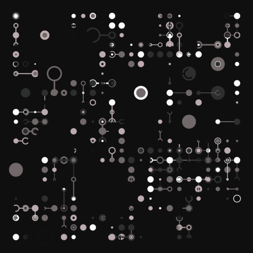

McCole Template

I have built half a dozen templates for lessons and tutorials over the years using almost as many different sets of tools. This one, McCole, is a rational reconstruction of what I created for the JavaScript and Python versions of Software Design by Example. If you would like to help improve it, please submit a pull request to its GitHub repository
"McCole Template" is a Third Bit production.